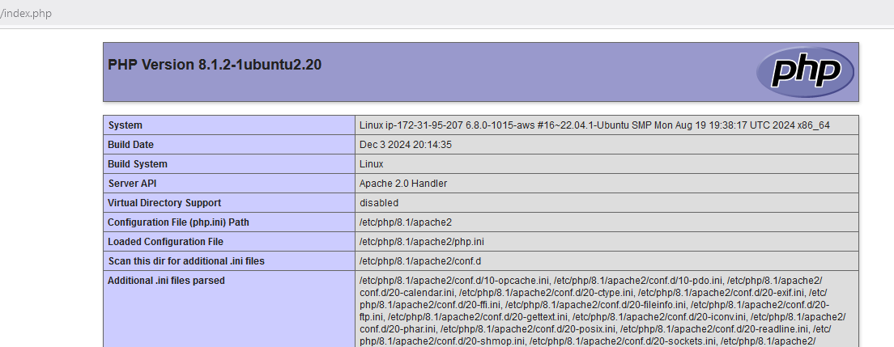

1. Creación de una máquina virtual con Apache en AWS
1.0.1 Parte I: creación de la máquina
AWS (Amazon Web Services) es la nube de Amazon. Existen licencias de aprendizaje (AWS Academy) en que no tienes riesgo de cobros. Pídele a tu profesor acceso a AWS Academy para poder aprender a usar AWS.
En AWS existe una gran cantidad de servicios. En nuestro caso usaremos el de creación de máquinas virtuales en la nube (similar a la de Virtualbox que hemos creado antes). Este servicio, en Amazon, se llama Elastic Compute Cloud 2 (EC2).
- Crea una máquina con Ubuntu 24.04 en AWS. Asegúrate de que la configuras usando solo la capa gratuita.
- Durante la creación de la máquina, genera unas claves SSH. La clave pública se almacenará en la máquina que creas, per ola privada tendrás que descargarla y no perderla. Mas adelante la usaremos para conectarnos desde nuestro terminal a la máquina de forma segura.
- Arranca la máquina.
1.0.2 Parte II: instalación de un servidor y redirección de puertos
- Instala Apache2 en la máquina.
- Elimina el contenido del index. Crea un HTML sencillo con un head, un body, encoding UTF-8, idioma español y un H1 con tu nombre y apellidos.
- Ejecuta desde la propia máquina los siguientes comandos:
- curl -I localhost (i mayúscula, esto debería devolver las cabeceras HTTP).
- curl localhost (esto debería devolverte el contenido de la página web).
¿Por qué estamos ejecutando los comandos anteriores? Porque ese es el contenido exacto que se devuelve cuando escribimos en el navegador web (Chrome por ejemplo) una página y le damos a ENTER. El navegador es un programa que interpreta ese código y muestra el contenido de una forma más visual (cajas de texto, imágenes, etc.).
- Configura el reenvío de puertos de la máquina de AWS para que todo el tráfico que vaya al puerto 80 de la ip pública de AWS se envíe al puerto 80 de la IP privada de la máquina que has creado. Después, trata de acceder desde tu ordenador y desde el móvil (captura de la configuración del puerto en AWS).
1.1 Instalación de PHP
Seguimos con la máquina de EC2. El servidor web anterior almacena los ficheros HTML y CSS que queramos crear en él y los sirve al cliente, quien los pide desde su navegador web.
Por otro lado, a diferencia de HTML y CSS, que son interpretados por el navegador web del cliente (el servidor no hace nada más que enviarlos al cliente que los pide), PHP se ejecuta en el propio servidor.
Por defecto, Apache no integra PHP (necesitamos instalar PHP en nuestro Ubuntu). Para ello podemos ejecutar el siguiente comando:
Info
El comando anterior instala dos paquetes:
- PHP.
- libapache2-mod-php: es la integración de PHP con Apache (sin esto Apache sigue sin poder ejecutar código PHP).
Crea un fichero prueba.php en tu directorio de Apache con la siguiente línea
Info
Ten en cuenta lo siguiente sobre el lenguaje PHP:
- Si queremos escribir código PHP, primero hay que abrir con
<?phpy, cuando acabamos, cerramos con?>. - Si quieres integrar código php, la extensión no debe ser .html sino .php (por ejemplo: index.php, pagina1.php, etc.).
- El código PHP se escribe dentro de esa sección y podemos abrirla y cerrarla cuando queramos. Fuera de ella podemos escribir CSS o HTML como siempre.
- Ejecutando la sentencia
phpinfo();lo que hacemos es mostrar una tabla con la información de la instalación de PHP en ese equipo. Ten cuidado no equivocarte con las mayúsculas y minúsculas, ya que un pequeño fallo de sintaxis hará que no funcione la página.
Si todo ha ido bien, verás una pantalla como esta: 
1.2 Aprende un poquito de PHP
Crea nuevos ficheros .php para hacer loss pasos del 3 al 6 (ambos incluidos) del este tutorial y aporta al menos una captura de prueba de cada uno para ver que los has realizado.
Son ejercicios simples pero te darán una introducción a un lenguaje de programación web. El tutorial muestra las soluciones en la parte inferior de la página, aunque te recomiendo que intentes hacerlo por ti mismo.
(captura de código y prueba de cada ejercicio en el navegador)
1.3 Servidor de base de datos MariaDB
Ya sabemos instalar y configurar de forma básica un servidor web: sabemos en qué puerto corre (normalmente 80), instalarlo, cómo cambiar su document root. Vamos a ver ahora lo básico sobre servidores de base de datos.
1.3.1 Instalación
- MySQL y MariaDB son servidores de base de datos que tienen ambas origen en MySQL 5.7. Después el desarrollo de cada una fue por su lado. Instala el servidor de base de datos MariaDB (paquete mariadb-server).
- Comprueba si el servicio de mariadb está en ejecución (con el comando
systemctl). En caso de no estar arrancado, arráncalo (captura de los comandos de estos puntos) - Securiza MariaDB con el comando
mysql_secure_installation. Aparecerán varias preguntas:- Introducir la contraseña de administrador de MySQL/MariaDB.
- Cambiar a tipo de autenticación "unix_socket". Responderemos a esto que NO. Si respondemos que "sí", el usuario root puede identificarse sin contraseña (esto es, el administrador de MySQL está ligado al usuario root). Si respondes "no" la contraseña de root de MySQL será independiente.
- Deshabilitar el login como root remotamente: sí (es más seguro).
- Recargar las tablas de privilegios: respondemos sí.
1.3.2 Usando MySQL desde un cliente de terminal
En esta parte vamos a ver como usar por consola MySQL/MariaDB de forma básica:
Para entrar en el cliente de MariaDB o MySQL:
Una vez dentro, puedes ver las bases de datos que hay creadas con:
Si queremos crear una base de datos sencilla:
Si se ha creado la base de datos e intentas volver a ejecutar la última línea, no va a funcionar porque “prueba” ya existe. Si quieres asegurarte de que no te de error podrías usar:
Vamos a crear alguna tabla en "prueba". Para ello, asegúrate primero de que está creada usando el comando show databases. Luego, sitúate en la base de datos con el comando:

Comprobamos que se ha creado correctamente:
(captura)
También podemos ver el código de creación de la tabla con el comando:
Ahora, haz un select:
No hay nada, así que insertemos una fila:
Volvemos a ver os datos da táboa usuarios:
(captura)
Vamos a sair de MariaDB:
1.3.3 Importando un script de MySQL/MariaDB con comandos
Dado el siguiente script que crea una base de datos sencilla con una tabla empleado:
-- Creamos la base de datos con codificación UTF-8
CREATE DATABASE if not exists bd_empresa CHARACTER SET = utf8mb4 COLLATE = utf8mb4_unicode_ci;
-- Usamos la base de datos
USE bd_empresa;
-- 3. Usamos InnoDB como motor de almacenamiento (es el más moderno, el por defecto es MyISAM)
SET default_storage_engine = InnoDB;
-- 4. Creamos una tabla sencilla
CREATE TABLE empleado (
id INT AUTO_INCREMENT PRIMARY KEY, -- Columna de ID autoincremental
nombre VARCHAR(100) NOT NULL,
fecha_creacion TIMESTAMP DEFAULT CURRENT_TIMESTAMP
);
Copia el script y guárdalo en un fichero script_creacion_bbdd.sql.
Podríamos escribir línea a línea dentro del cliente de MySQL todos los comandos del script, pero hay una manera mas fácil que es importarlo directamente:
Ejercicio
Accede a MariaDB y comprueba que el script se ejecutó correctamente (es decir, que tanto la base de datos como la tabla se han creado bien). (captura)
1.3.4 Creando un usuario
Al configurar MariaDB con mysql_secure_installation hemos deshabilitado el acceso remoto del usuario root. Por tanto, si queremos acceder remotamente (desde otro equipo) a la base de datos de la máquina tendremos que crear un usuario en ella que tenga permisos sobre la base de datos que acabamos de crear.
// Sintaxis para crear un usuario nuevo
CREATE USER 'usuario_bbdd'@'localhost' IDENTIFIED BY 'contrasenha';
// Sintaxis para dar permisos sobre la tabla
GRANT ALL PRIVILEGES ON mi_base_de_datos.* TO 'usuario_bbdd'@'localhost';
Esto está muy simplificado (se pueden hacer muchas más cosas) pero son las operaciones más simples y habituales que podemos ver. Al crear el usuario con 'localhost', solo podremos identificarnos con este usuario desde el mismo equipo (localhost). En caso de que queramos permitir acceder desde cualquier equipo, usaríamos '%' en lugar de 'localhost'. Este % se refiere a cualquier host.
En el caso de dar privilegios al usuario sobre la base de datos se usa * y no porcentaje. En el ejemplo hemos dado permisos a 'usuario_bbdd' para hacer cualquier operación (GRANT ALL PRIVILEGES) sobre cualquier tabla de la base de datos (*).
Ejercicio
- Crea un usuario con tu nombre y primer apellido y la contraseña que quieras (por ejemplo: "Abcd1234.").
- Dale permisos a tu usuario sobre la base de datos que creaste antes en el script. (captura)
- Intenta loguearte en MySQL con use usuario desde la propia máquina y comprueba que puedes hacer un select sobre la tabla empleado. (captura)
1.3.5 Acceso remoto
- Utiliza en tu ordenador de casa MySQL Workbench (u otro cliente similar de MySQL) para conectarte a la base de datos. Recuerda que MySQL / MariaDB se ejecuta por defecto en el puerto 3306.
- En el caso de que no te funcione, es posible que MariaDB/MySQL solo esté habilitado para funcionar (por seguridad) en tu máquina local (es decir, que solo permite acceder desde el propio equipo donde está instalado). Para cambiar esto, hay que modificar un fichero de configuración y decirle que quieres permitir el acceso desde 0.0.0.0 (que significa cualquier ip, te dejo este enlace de ayuda).
- Ten en cuenta que quizá tengas que permitir que a la máquina de AWS entre tráfico por el puerto 3306.
Si tienes en cuenta todo esto, deberías poder usar MySQL desde un cliente remoto sin problemas. (captura de la conexión remota demostrando que es la ip de aws)